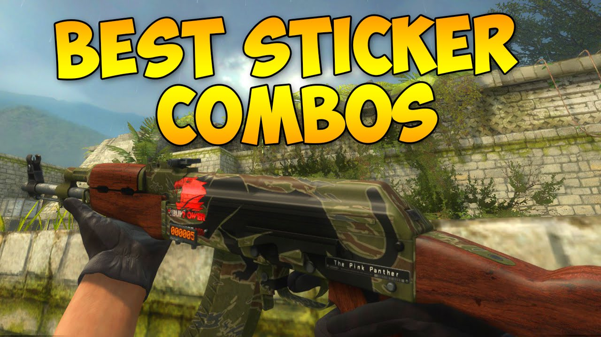

Popular Rifle Skins
Rifle skins make up the core of the CS:GO skin economy, with the AK-47 and M4A4/M4A1-S leading in popularity due to their frequent use in competitive play. These weapons balance price, liquidity, and investment potential.

Float Value Comparison: AK-47

The appearance of a skin changes dramatically based on its float value. This AK-47 shows the visual progression from Factory New (0.00) to Battle-Scarred (0.99). For some skins like the AK-47 Fire Serpent, minimal wear is visually very similar to Factory New but at a significantly lower price point.
AK-47 Skins

The AK-47 is the most popular rifle in CS:GO, used by Terrorists in virtually every competitive match. Its skins typically maintain strong value due to consistent demand.
Notable AK-47 Skins:
- Fire Serpent
- Released in Operation Bravo Case
- Limited availability drives high prices
- Distinctive dragon artwork
- Wild Lotus
- Part of The St. Marc Collection
- Rarely obtainable through trade-up contracts
- Vibrant floral design
- Asiimov
- Iconic white, orange and black sci-fi design
- Consistently popular in the market
- Part of the larger Asiimov collection
M4A4 & M4A1-S Skins
The Counter-Terrorist equivalents to the AK-47, these rifles feature some of the most coveted skins in the game. Players can choose between the M4A4 or M4A1-S, affecting which skins they can use.
Notable M4 Skins:
- M4A4 Howl
- Contraband rarity due to copyright issues
- Only contraband skin in the game
- Consistently appreciating in value
- M4A1-S Knight
- Used in trade-up contracts for AWP Dragon Lore
- Clean, elegant gold design
- Value tied to Dragon Lore demand
- M4A4 Poseidon
- Rare drop from The Gods and Monsters Collection
- Greek mythology-inspired design
- Limited supply due to collection discontinuation
AWP Skins

The AWP is CS:GO's iconic sniper rifle, capable of one-shot kills. Its high-profile nature in gameplay makes its skins among the most visible and desirable in the game.
Notable AWP Skins:
- Dragon Lore
- The most prestigious skin in CS:GO
- Extremely rare drop from The Cobblestone Collection
- Golden dragon design with intricate details
- Gungnir
- Norse mythology-inspired design
- Part of The Norse Collection
- Blue and silver color scheme with runic details
- Asiimov
- One of the most recognizable skins in CS:GO
- Featured in many professional tournaments
- Clean white, orange and black futuristic design
The Contraband Collector: M4A4 Howl

The M4A4 Howl holds a unique status as the only Contraband-tier skin in CS:GO. Originally released in the Huntsman Case as a Covert rarity skin, it was discovered that the artwork was plagiarized from a DeviantArt artist. Valve subsequently removed it from cases, replaced the artwork, and upgraded its rarity to Contraband, creating an exclusive collectible that continues to appreciate in value.
Sticker Placement and Value
Stickers can add significant value to rifle skins, especially tournament stickers from major events. The position of stickers matters - "above the mag" (position #3) is generally considered the most visible and valuable position for AK-47 stickers. Rare sticker combinations from early tournaments can multiply a skin's base value.
Investment Strategy
When investing in rifle skins, consider these factors:
- Weapon Usage Rate
- AK-47, M4A4/M4A1-S, and AWP see the most gameplay
- Meta changes can affect specific model popularity
- Tournament visibility increases demand
- Collection Status
- Discontinued collections typically appreciate faster
- Operation-exclusive drops become more scarce over time
- Limited release windows affect long-term supply
- Visual Appeal
- Distinctive, high-contrast designs retain popularity
- Professional player preferences influence market trends
- Unique patterns (like AK Case Hardened blue gems) command premiums
The Dragon Collection
Some weapon skins, like the Dragon Lore series, form thematic collections that are popular among collectors seeking to own matching sets. Collecting complete themed sets can be an effective long-term investment strategy as they often appreciate together.